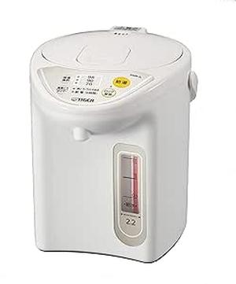

「まさか…また電気代が？」 その不安を「賢い節約と便利さ」に変える、タイガー魔法瓶 マイコン電気ポット PDR-G220-WUの真価

皆さん、こんにちは。ご自宅に電気ポットはありますか？ そして、その電気ポット、本当にあなたの「暮らし」を豊かにしてくれていますか？ もしかしたら、こんな不満を抱えてはいませんか？
「電気代が、なんだか高くなっている気がする…」
「使いたい時にすぐお湯が沸かないから、結局ヤカンを使ってしまう…」
「保温している時間が長すぎて、無駄な電気を使っている気がする…」
「デザインが古くて、キッチンに馴染まない…」
日々の生活に欠かせないお湯。その準備がストレスになったり、家計を圧迫したりするのは、決して良いことではありません。多くの人が、電気ポットの「電気代」や「使い勝手」に漠然とした不安を抱えながらも、具体的な対策を講じないまま使い続けているのが現状です。私もこれまで、電気代の高騰に頭を悩ませたり、お湯がすぐに沸かないことにイライラしたりする姿を数多く見てきました。そのたびに、「もっと賢く、もっと便利に、そしてもっと安心して使える電気ポットはないものか」と感じていたのです。
過去の「電気ポットトラブル」がもたらす不満と諦め
あなたは過去に、こんな経験をしたことがないでしょうか？
「一日中保温していたら、電気代が跳ね上がってしまった…」
「急にお湯が必要になったのに、沸騰するまで時間がかかりすぎて間に合わなかった！」
「使わない時間帯もずっと保温されていて、無駄な電気を使っている気がして罪悪感があった…」
「デザインが野暮ったくて、お客様が来た時にちょっと恥ずかしい…」
これらの経験は、電気ポットに対する不信感を生み、私たちの「暮らしの質」を奪ってしまいます。特に、電気代の変動は家計に直結するため、その「負担軽減」への切実な願いへと繋がります。私たちは、常に「もっと良い方法はないか」という疑問を抱えながら、妥協して使い続けてきたのかもしれません。
なぜ、タイガー魔法瓶 マイコン電気ポット PDR-G220-WUがあなたの救世主となるのか？
今日、皆さんにご紹介したいのは、そんなあなたの悩みを解決し、お湯のある暮らしを「賢い節約と便利さ」に変えるための強力なパートナーとなる製品です。それが、タイガー魔法瓶 マイコン電気ポット 保温機能 節電タイマー 2.2L アーバンホワイト PDR-G220-WUです。
なぜこの電気ポットが、あなたの暮らしに革命をもたらすのか。それは、単にお湯を沸かすだけでなく、あなたの「不安」を取り除き、「確かな節約効果」と「快適な使い心地」を両立してくれるからです。
多くの電気ポットユーザーが経験する「電気代の高さ」は、実は不必要な保温や、効率の悪い沸騰方法に起因しています。古い電気ポットは、単に設定温度まで保温し続けるだけで、使用しない時間帯も電気を消費し続けてしまうことが多々あります。
タイガー魔法瓶 マイコン電気ポット PDR-G220-WUは、タイガー魔法瓶が長年培ってきた省エネ技術と、ユーザーの使い勝手を追求した工夫が凝縮された製品です。まるでベテランの家事代行サービスが、あなたのニーズに合わせて最適な「お湯のある暮らし」を提供するかのように、賢く電気を使い、いつでも必要な時にお湯を提供してくれます。
具体的には、この電気ポットは「節電タイマー」機能を搭載しています。これは、あなたが電気ポットを使わない時間帯を設定することで、その間は自動的に保温をオフにし、電気の無駄を徹底的に省くことができる画期的な機能です。例えば、仕事に出かける前や、夜寝る前などにタイマーを設定しておけば、不要な電気代を大幅に「負担軽減」することができます。これはまさに「効率」的なエネルギー管理であり、あなたの家計への「安心感」を確かなものにしてくれます。
他の「それっぽい」製品との決定的な違い
世の中には、様々な電気ポットや電気ケトルが出回っています。価格帯も機能も様々で、どれを選べば良いのか迷ってしまう方も少なくないでしょう。しかし、ここで皆さんに強くお伝えしたいのは、タイガー魔法瓶 マイコン電気ポット PDR-G220-WUが、他の「それっぽい」製品とは一線を画す、確かな「信頼」と「品質」、そして「システム」を備えているという点です。
講義：電気ポットの省エネ技術と選択のポイント
電気ポットの消費電力は、主に「沸騰時」と「保温時」に発生します。特に、保温時の消費電力は、年間を通じて見ると決して無視できないレベルになります。一般的な電気ポットは、常に設定温度を維持しようとするため、電気を使い続けます。
その点、タイガー魔法瓶 マイコン電気ポット PDR-G220-WUは、マイクロコンピューター（マイコン）制御によって、より「効率」的な保温を実現しています。また、先ほど述べた「節電タイマー」機能は、保温による電力消費を賢く抑制するための非常に有効な手段です。6時間、7時間、8時間、9時間、10時間といった多様なタイマー設定が可能なため、あなたのライフスタイルに合わせて最適な「節電」が可能です。例えば、日中ほとんど家にいない方なら、長時間設定にしておけば、無駄な保温を徹底的に省けます。
さらに、この電気ポットは、98℃・90℃・70℃の3段階の保温設定が可能です。これは、用途に合わせて最適な温度で保温できるため、「常に熱々のお湯が必要なわけではない」という場合に、消費電力を抑えながら「安心感」を保つことができます。例えば、コーヒーや紅茶なら90℃、赤ちゃんのミルクや白湯なら70℃といった具合に、使い分けができるのは非常に便利です。この「細やかな温度設定」は、他のシンプルな電気ポットにはない、タイガーならではの「ユーザー目線」の設計と言えるでしょう。
「安心・安全設計」と「使いやすさ」の「安心感」
タイガー魔法瓶 マイコン電気ポット PDR-G220-WUの大きな魅力の一つは、「安心・安全設計」であることです。電気製品を使う上で、最も重視されるべきは安全性です。特に、熱いお湯を扱う電気ポットは、万が一の事故を防ぐための工夫が不可欠です。
この電気ポットは、タイガー魔法瓶が長年培ってきた安全技術が随所に活かされています。例えば、「転倒お湯もれ防止機能」は、万が一本体を倒してしまっても、お湯がこぼれにくい構造になっています。小さなお子様やペットのいるご家庭でも「安心感」を持って使用できるため、「過去の疑念」を持つことなく、日々の暮らしに溶け込ませることができます。
そして、もう一つ、この製品が持つ素晴らしい利点が「使いやすさ」です。
「広口容器」：内容器が広口なので、お手入れが簡単で、「負担軽減」になります。常に清潔な状態を保てるため、「安心感」があります。
「上ぶた着脱式」：上ぶたが簡単に取り外せるため、給水やお手入れがさらに「効率」的になります。
「湯沸かし・保温」：沸騰も保温も、シンプルで分かりやすいボタン操作で完結します。機械操作が苦手な方でも「安心感」を持って使いこなせるでしょう。
これらの機能は、日々の生活の中での「負担軽減」と「効率」的な使用を追求した結果であり、まさに「一人暮らしに便利」な機能と言えるでしょう。また、高齢の方でも簡単に操作できる「安心感」を提供します。
あなたの「過去の失敗」に寄り添う共感表現
「でも、電気ポットって結局どれも同じようなものでしょ？ 買い替えても大して変わらないんじゃないの…」
そう思われた方もいらっしゃるかもしれません。私も、その気持ちは痛いほどよく分かります。新しいものを手に入れたときの高揚感は素晴らしいですが、それが一時的なものに終わってしまう経験は、誰にでもあるでしょう。しかし、タイガー魔法瓶 マイコン電気ポット PDR-G220-WUは、その「過去の疑念」を打ち破る力を持っています。
なぜなら、この電気ポットへの投資は、単なる家電の買い替えではなく、「賢い電気の使い方と快適な暮らしへの投資」に変えてくれるからです。
例えば、あなたは今まで、不必要な電気代に悩まされながらも、具体的な対策を見つけられずにいたかもしれません。しかし、この電気ポットの「節電タイマー」や「3段階保温」を活用することで、あなたは自身のライフスタイルに合わせて電気の使用を最適化し、電気代の「負担軽減」を実感できるでしょう。これは、単なる数字の削減だけでなく、環境への配慮という「安心感」ももたらします。
そして、この製品がもたらすもう一つの共感ポイントは、いつでも「適温のお湯」が手元にある快適さです。急な来客時でも、赤ちゃんのミルクを作る時でも、あるいはちょっとしたお茶を淹れたい時でも、ヤカンを火にかける手間や、電気ケトルが沸騰するまでの待ち時間から解放されます。この「待ち時間の負担軽減」こそが、日々の生活の質を向上させ、心のゆとりを生み出す「効率」的な時間の使い方へと繋がるのです。
類似製品との「論理的な」比較と優位性
ここで、もう少し踏み込んで、他の選択肢とタイガー魔法瓶 マイコン電気ポット PDR-G220-WUの比較について考えてみましょう。
市場には、電気ケトルや、より大型の電気ポットなど、様々なお湯沸かし機器が存在します。しかし、重要なのは、あなたの「ライフスタイル」と「ニーズ」に最も合致する製品を選ぶことです。
講義：電気ケトルと電気ポットの「使い分け」
電気ケトルは、少量のお湯を短時間で沸かすのに非常に優れています。例えば、カップ麺一つ分のお湯が欲しい時や、コーヒー一杯分だけ沸かしたい時などには最適です。しかし、一度に沸かせる量が限られており、保温機能がないため、複数回お湯が必要な場合には、その都度沸かし直す必要があります。
一方、電気ポットは、一度にまとまった量のお湯を沸かし、それを長時間保温しておくことができます。家族の人数が多いご家庭や、頻繁にお茶を飲む習慣がある方、あるいは赤ちゃんのミルク作りなどで定期的にお湯が必要な方には、非常に「効率」的です。しかし、保温機能があるがゆえに、その電力消費が気になるという「過去の疑念」がありました。
タイガー魔法瓶 マイコン電気ポット PDR-G220-WUは、この電気ポットの「保温の便利さ」と、賢い「節電」を両立させることで、電気ポットの「デメリット」を解消し、その「メリット」を最大限に引き出しています。特に、2.2Lという容量は、一人暮らしから少人数のご家庭まで、幅広いニーズに対応できる「適切なサイズ感」であり、「安心感」を提供します。
さらに、アーバンホワイトというシンプルで洗練されたデザインも、この電気ポットの大きな魅力です。どんなキッチンのインテリアにも馴染みやすく、生活感が出すぎないため、あなたの暮らしをより豊かに彩ってくれるでしょう。機能性だけでなく、デザイン性にも配慮されている点は、現代のライフスタイルに「効率」的にフィットすると言えます。
口コミが語る「真実」と「理想の未来」
実際にタイガー魔法瓶 マイコン電気ポット PDR-G220-WUを使っている方々からは、数多くの喜びの声が届いています。それは、単なる商品レビューというよりも、彼らの暮らしに起きた「変化」を語る生の声です。
ある30代の主婦は、「以前のポットは電気代が高くて、保温機能をほとんど使えませんでした。でも、このタイガーのポットは節電タイマーのおかげで、外出中に無駄な電気を使わずに済み、家計が本当に助かっています。しかも、帰宅するとすぐに熱々のお湯が使えるので、料理やコーヒーがすぐに用意できて、毎日の『負担軽減』がすごいです！」と喜びを語っています。
また、60代の男性は、「夫婦二人暮らしなので、2.2Lという容量がちょうどいいですね。操作もシンプルで分かりやすく、大きな表示で温度も確認できるので、安心して使っています。特に、夜中に熱いお茶を飲みたい時に、すぐに用意できるのが本当に便利で、毎日を『効率』的に過ごせています」と、その使いやすさと利便性を高く評価しています。
これらの声は、タイガー魔法瓶 マイコン電気ポット PDR-G220-WUが、単なる家電製品ではなく、人々の「負担軽減」を促し、より良い未来へと導く「パートナー」であることを物語っています。
タイガー魔法瓶 マイコン電気ポット PDR-G220-WUを日々の生活に取り入れることで、あなたはどんな未来を手に入れることができるでしょうか？
想像してみてください。朝、目覚めてすぐに、タイマーで設定しておいた熱々のお湯で、香り高いコーヒーを淹れる至福のひととき。忙しい朝でも、時間を気にせずゆとりが生まれるでしょう。
夕食後、家族みんなで温かいお茶を囲む団らんの時間。いつでも適温のお湯がスタンバイしている「安心感」が、会話をより豊かにするでしょう。
電気代の請求書を見て、以前よりも安くなっていることに気づき、心の中でガッツポーズをする喜び。これは、この電気ポットがもたらす「賢い節約」の成果です。
このように、タイガー魔法瓶 マイコン電気ポット PDR-G220-WUは、あなたの「日々の気づき」を促し、小さな「行動」へと繋げ、それが積み重なることで、やがて大きな「変化」となってあなたの理想的な未来を実現する手助けをしてくれるのです。
講義：エネルギーの「見える化」と「意識改革」
電気ポットの「節電タイマー」や「3段階保温」といった機能は、単に電気代を節約するだけでなく、私たちの「エネルギーに対する意識」を変える力を持っています。
私たちは、日常的に電気を消費していますが、その多くは「見えない形」で消費されています。しかし、タイマー設定を通じて、どの時間帯にどれくらいの電気が必要なのかを意識するようになると、自然と他の家電製品の使い方にも目が向くようになります。これは、家庭全体の「エネルギー効率」を高めるための「意識改革」へと繋がり、結果として家計全体の「負担軽減」にも貢献します。
この電気ポットは、単なる道具ではなく、あなたの暮らしをより「賢く」「効率」的に、そして「安心感」を持って送るための「相棒」となるでしょう。
この電気ポットは、まさにあなたの「賢い家計簿」のような存在です。日々の電力消費を最適化し、いつでも必要な時に、必要なだけのお湯を提供する。このバランス感覚こそが、あなたの暮らしをより豊かに彩る鍵となるでしょう。
あなたのお湯のある暮らしは、あなたが選ぶ電気ポットによって、大きく変わります。その変化を良い方向へと導き、より快適で、より節約できる生活を実現すること。これが、快適な暮らしの基本であり、最も重要なポイントです。
タイガー魔法瓶 マイコン電気ポット PDR-G220-WUは、その基本を誰もが手軽に実践できるように設計されています。複雑な操作は不要。ただ設定するだけ。このシンプルさの中にこそ、あなたが賢い暮らしを継続し、理想の自分へと近づいていくための秘訣が隠されています。
あなた自身の暮らしと向き合い、その変化を喜び、そして次の目標へと進む。そんなポジティブなサイクルを、このタイガー魔法瓶 マイコン電気ポット PDR-G220-WUと共に始めてみませんか？ あなたの快適な未来は、まさにここから始まるのです。
商品詳細・ご購入はこちら
次の商品を見る→